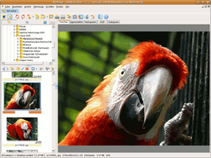
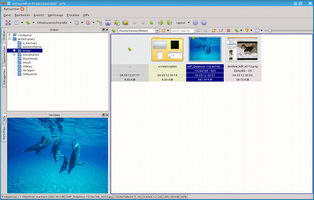

XnView
Archivierte Anleitung
Dieser Artikel wurde archiviert, da er - oder Teile daraus - nur noch unter einer älteren Ubuntu-Version nutzbar ist. Diese Anleitung wird vom Wiki-Team weder auf Richtigkeit überprüft noch anderweitig gepflegt. Zusätzlich wurde der Artikel für weitere Änderungen gesperrt.
Anmerkung: Der Nachfolger ist XnViewMP
Zum Verständnis dieses Artikels sind folgende Seiten hilfreich:
XnView  ist eine Software zum Betrachten und Konvertieren von Grafikdateien, die es für Windows und Linux gibt. Das Programm ist für den privaten Gebrauch und für nicht-kommerzielle, gemeinnützige Einrichtungen kostenlos. Eine kommerzielle Nutzung erfordert zwingend eine entsprechende Lizenz. Die Preise sind nach Mengen gestaffelt und beginnen bei 26 EUR für eine Einzellizenz.
ist eine Software zum Betrachten und Konvertieren von Grafikdateien, die es für Windows und Linux gibt. Das Programm ist für den privaten Gebrauch und für nicht-kommerzielle, gemeinnützige Einrichtungen kostenlos. Eine kommerzielle Nutzung erfordert zwingend eine entsprechende Lizenz. Die Preise sind nach Mengen gestaffelt und beginnen bei 26 EUR für eine Einzellizenz.
Im Vergleich zu den meisten anderen Bildbetrachtern hat XnView einen deutlichen größeren Funktionsumfang. So beherrscht das Programm z.B. das Zuschneiden von Bildern, Änderungen der Farbtiefe, die Änderung der Bildgröße und die Anwendung von diversen Filtern. Die meisten Befehle sind auch per Stapelverarbeitung automatisierbar. Eine weitere Stärke ist ist die Vielfalt der unterstützen Dateiformate: das Programm liest ca. 400 verschiedene Formate und kann rund 50 Formate schreiben. Eine Übersicht gibt es auf dieser Seite .
Der vielleicht größte Nachteil ist, dass XnView (immer noch) auf GTK1 basiert, wodurch das Aussehen ziemlich altbacken und auch die Bedienung teilweise ein wenig sperrig ist. Die Installations-Methoden 3-5 (siehe unten) sind für aktuelle Ubuntu-Versionen nicht mehr zu empfehlen. Stattdessen ist es angeraten, entweder XnViewMP zu benutzen oder XnView mit Wine zu benutzen.
Seit längerer Zeit wird eine neue Version entwickelt, deren Oberfläche auf Qt basiert. Man kann die neue Version XnViewMP beta  seit 2008 im Forum von XnView herunterladen. Die Entwicklung wird kontinuierlich fortgeführt, ist aber noch nicht abgeschlossen.
seit 2008 im Forum von XnView herunterladen. Die Entwicklung wird kontinuierlich fortgeführt, ist aber noch nicht abgeschlossen.
Hinweis:
Als Fix Picture gibt es ein Online-Variante von XnView, welche einen Teil der Funktionen als Webapplikation bereit stellt (die Dateigröße/der Upload ist auf max. 3 MB beschränkt).
|  |
| XnView unter Wine |
|  |
| XnViewMP beta |
Installation¶
XnView ist nicht als Ubuntu-Paket verfügbar, die Installation ist trotzdem einfach.
Hinweis!
Fremdsoftware kann das System gefährden.
Möglichkeit 1: Per Wine¶
Da die Windows-Version von XnView deutlich mehr Funktionen bietet als die Linux-Version (z.B. JPEG2000 Export), kann man auch das Windows-Paket per Wine installieren. Wenn Wine bereits installiert und lauffähig ist, genügt ein
wine XnView-win-full-de.exe
um XnView zu installieren. Es ist dann unter "Anwendungen -> Wine -> Programme -> XnView" im Menü zu finden.
Möglichkeit 2: Installation von XnViewMP¶
Weil sich die neue Version von XnViewMP noch in der Entwicklung befindet, kann man das Programm nur als .deb Datei aus dem Forum von XnView herunterladen.
Möglichkeit 3: Per Binärpaket¶
Zuerst lädt man von dieser Seite XnView die vorkompilierte 32-Bit Version als .tar.gz-Archiv herunter. Danach entpackt [1] man es und öffnet ein Terminal [2]. Dort gibt man dann die Befehle
sudo mv <XnView-ORDNER> /opt sudo ln -s /opt/<XnView-ORDNER>/bin/xnview /usr/local/bin/xnview
ein, um zuerst den XnView-Order nach /opt/ zu verschieben (damit alle Benutzer auf XnView zugreifen können) und danach einen Link zum Starten des Programms bereit zu stellen.
Möglichkeit 4: Per Installer¶
Alternativ kann man auch den enthaltenen Installationsassistenten (mit Root-Rechten!) benutzen. Der Datei muss man zuvor allerdings Ausführrechte [3] geben. Wichtig ist, dass man das Verzeichnis /usr/lib/X11/app-defaults/ vorher anlegt:
sudo mkdir -p /usr/lib/X11/app-defaults
Falls dieser Ordner nicht existiert, gibt das Installations-Skript einen Fehler aus, dass die Datei /usr/lib/X11/app-defaults/XnView nicht erstellen werden kann.
Benutzung von XNView mit GTK 1¶
Nach erfolgreicher Installation kann man nun per
xnview
die Anwendung starten. Wer möchte, kann sich noch einen Programmstarter für das Menü anlegen. Ein passendes Symbol ist auf der Homepage des Programms zu finden.
Problembehebung¶
 Übersichtsartikel
Übersichtsartikel- Erstellt mit Inyoka
-
 2004 – 2017 ubuntuusers.de • Einige Rechte vorbehalten
2004 – 2017 ubuntuusers.de • Einige Rechte vorbehalten
Lizenz • Kontakt • Datenschutz • Impressum • Serverstatus -
Serverhousing gespendet von